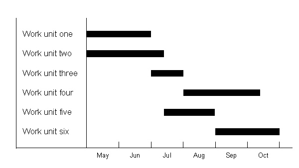

| Artifact: Project Management Schedule (ENG 345) |
 |
|
The purpose of the Project Management Schedule is:
|
| Main Description | Each project organizational unit has a Project Management Schedule. It defines the planned start and finish dates for, and the dependencies between, all the work units for which the organizational unit is responsible. These work units, which all together define the work to be accomplished, are often presented in a hierarchy made of phases, activities, and tasks. The scope of the schedule is:
|
||||||||||||||||||||||||||||||||||||
|---|---|---|---|---|---|---|---|---|---|---|---|---|---|---|---|---|---|---|---|---|---|---|---|---|---|---|---|---|---|---|---|---|---|---|---|---|---|
| Brief Outline | The structure of the Project Management Schedule is illustrated in the following Gantt chart, where each work unit is represented by a bar that shows its start and finish dates.  Work units are usually presented in a structured way with a three-level hierarchy of:
Additionally, milestones, which may be at any level, are represented as work units of zero duration. |
||||||||||||||||||||||||||||||||||||
| Notation |
|
The Project Management Schedules, one for each project organizational unit, are developed in two stages:
Individual Project Management Schedules are developed from the Work Breakdown Structure (WBS) using a five step process:
The steps are repeated until an acceptable balance is achieved between duration and resource utilization. This usually takes several iterations. In simple projects, and when it makes sense to plan and track individually each work item, the work units of the Project Management Schedule represent such work items. When it is not appropriate to plan individually each work item in a Project Management Schedule, the work unit represents the lowest level to which dependencies must be tracked. In that case, the tracking of individual team member progress, against the work items which have been assigned to them, is usually done using an Operational Schedule. The Project Management Schedules are updated regularly, often weekly, to reflect progress. Although they can be produced manually, Project Management Schedules are usually built and maintained using scheduler tools. The accuracy and completeness of the Project Management Schedules is verified by inspection and by ensuring their consistency with the WBS and with each other. |
| Impact of not having | Lacking an accurate, consistent set of Project Management Schedules, the project manager cannot be confident that they can meet the sponsor’s expectations in terms of either scope or time scale. |
|---|---|
| Reasons for not needing | Each project organizational unit must have a Project Management Schedule. Therefore, a small project, with only one project organizational unit, needs only one Project Management Schedule. |
| © Copyright IBM Corp. 1987, 2012 All Rights Reserved Property of IBM These materials are intended only for use as part of an IBM engagement |